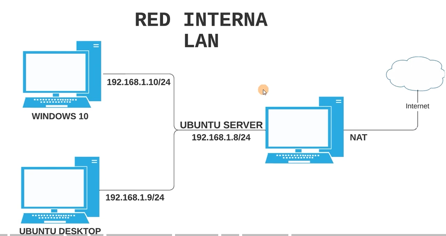

Configuración de red de las máquinas virtuales
Objetivos
- Comprender los tipos de red en máquinas virtuales.
- Configurar correctamente la red en un entorno virtualizado.
- Verificar la conectividad entre máquinas.
Contenido
Las máquinas virtuales permiten simular redes reales. Para ello, podemos usar distintos modos de red (Virtual Box):
- NAT
- Red interna
- Adaptador puente
Video explicativo Configuración Red Interna
Actividad
Configura dos máquinas virtuales en red interna y comprueba la conexión mediante:

ping
ip a